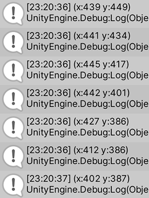

In the spirit of Rube Goldberg's fascination with the mechanism over the end result - how can we build similar systems in the digital realm? What kind of data could be passed around? With services could be chained together to produce some unexpected outcomes? What would the triggers look like - and the end results? None of those need to be practical, efficient or even reasonable - the focus is on the celebration of the chains of events and the mechanisms that enable them.
Type with a date and look what captain cat experiences that day!
Our original idea was to show the life journey of captain cat. The first trigger was to input a location, then a random cat would appear in the desktop and would trigger several tour images (e.g. food, building etc.) that were related to the location. Then the cat image and the tour images would be all collaged together and showed in the instagram account.
However, we found it hard to collage images together in the web. And we refined our idea to let user type the specific date, and the tour images that are linked with the date will be showed up.
Make a mixed-reality chair (a combination of a real and digital chair) by using the technique and concept of assembling, a three-dimensional alternative to collage, a technique of composing work by combining various found models, and online materials not normally associated with one another. Through this process, we will explore new forms of mashed-manufacturing and avatar/human-factors in design.
Using yourselves as a medium, how can you use machine learning to extend one another's attributes, mix, mash, and collaborate and formulate new in-between aesthetics from these various processes?
Start with the tools and technologies you find interesting, promising, compelling - in so many words, cool. How would you apply them, what would you like to create given a free reign? Limit yourself to one set of tools or one medium (Machine Learning, or Mediated Realities, or the Internet of Things, etc.). Clearly define your toolset and the goals you'd like to achieve in the scope of three weeks. Find some resources - documentations, tutorials, communities of practice - to help you with your experimentation. Make something.
Expericing the spacial tower and collecting the music tones!
Do you have a technology-dependent creative project in your head that you want to build? Do you look at a particular kind of work by other interactive designers/artists and think "I wish I knew how to make that!" In this project, we're dropping you in at the deep end. We want you to propose a creative technology project, and we're going to try to help you build it. Or, more accurately, we're going to help you identify and kludge together a small critical piece of it. The question of scope – figuring out what that "small critical piece" is – is fundamental here, and will underlie many of our discussions as your projects progress.
To "kludge" is to use an ill-assorted collection of parts to make something. It typically has negative connotations, suggesting something that has been quickly and shoddily put together. But kludging can be a valuable part of an iterative, exploratory, creative design process as we move back and forth between thinking and making, concept and prototype. This is especially true when working with (and designing) interactive technologies, where we are concerned with dynamic experiences and behaviors.
The Global Interior Project is a Networked Multi-User Virtual Environment where people can meet, talk and discover the metaphysics of reality.
Tool: Unity, OpenCV
Description: The FaceDector script will detect the human face and map the face to the plane in the unity scene. Meanwhile, the location of the face will be recorded and the PC model will move based on the movement of the face.


Climatological, social, and technological changes are occurring increasingly at a global, rather than regional, scale. While addressing issues of this complexity has always required the collaboration of multiple forms of scientific expertise, inexpensive super-computation and accessible software allows designers to engage with topics long considered strictly the purview of these scientific researchers and engineers.
For this project, you will create a vivarium: a micro-world where a defined set of properties and behaviors are placed and developed. As a starting point, you will be assigned one of the following verbs, each inspired by a current global crisis, nearing a tipping point: a condition where a controlling system is overwhelmed, sometimes beyond potential return or repair.
Tool: Unity
Description: It is an imaginary world where the land gets drying and plants get dying. The weather system is thrown into chaos, with toxic rain pouring down. Unknown creatures invade and take over the land. What could they be? We're about to find out.
Communication lies at the core of all media. From speech to the written word, from radio to social networks - the core function of media has been to enable and facilitate communication. In this project we're going to take on this radical approach to communication, and try to get to the root of mediated exchange. We will examine how data is collected, how it is transformed into information, how it can be encoded, transmitted, and decoded. In the process we will encounter the need to build contextualized systems of meaning: systems of representation that maintain internal coherence, but might not make a lot of sense when seen from the outside.
Poppy and Olive are two creatures that share their emotions with their hands and songs.
Shaders are also a set of instructions, but the instructions are executed all at once for every single pixel on the screen. That means the code you write has to behave differently depending on the position of the pixel on the screen. Like a type press, your program will work as a function that receives a position and returns a color, and when it's compiled it will run extraordinarily fast.